Elke woensdag
Pizzadag: alle pizza's €11
Geldt voor alle pizza's die worden afgehaald. Niet op feestdagen.
Bestel je pizza onlineKerkplein 4, Leersum
Ristorante, pizzeria en ijssalon
De authentieke smaken van Italië in het hart van Leersum. Pizza, pasta, vlees en vis, en Italiaans schepijs. Aan tafel of om af te halen.
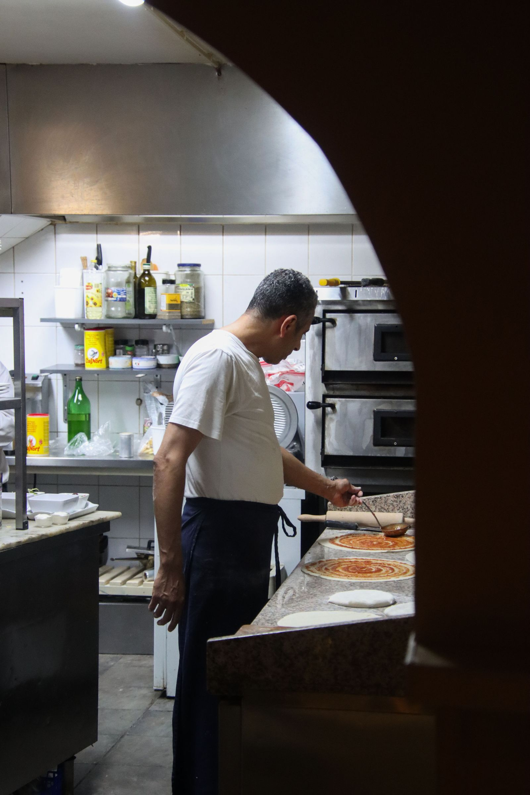
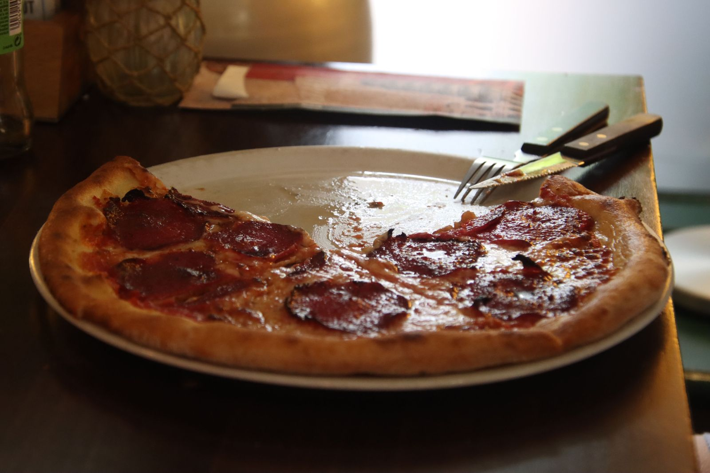
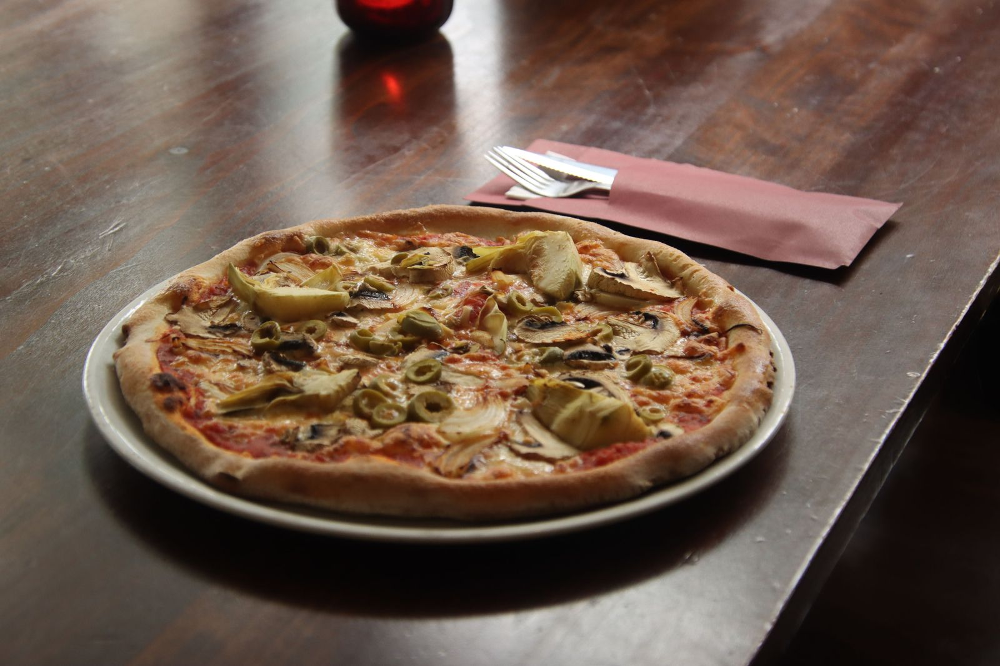
Elke woensdag
Geldt voor alle pizza's die worden afgehaald. Niet op feestdagen.
Bestel je pizza online1 mei t/m 30 september
In het zomerseizoen zijn we elke dag open vanaf 12:00 uur. Ciabatta, panini, salades, soep en warme voorgerechten.
Bekijk de lunchkaartDiverse Italiaanse vleeswaren
Dun gesneden verse ossenhaas met rucola en parmezaanse kaas
Gemengde salade
Salade met mozzarella, tomaat en pesto
Tonijnsalade
Fetakaas, tomaat, sla en komkommer
Broodjes met verse tomaten, basilicum en kruiden
Geroosterd dun sneetje brood met gorgonzola kaas uit de oven
Verse gebakken champignons in knoflook en witte wijn
Verse gebakken champignons in roomsaus
Geroosterd dun sneetje brood met mozzarella kaas en tomaat uit de oven
Gebakken garnalen met knoflook in tomatensaus uit de oven
Geroosterd dun sneetje brood met kaas en parmaham uit de oven
Verse groentesoep
Tomatensoep
Uiensoep
 Sfeerbeeld
SfeerbeeldMet tomatensaus en gehakt
Met roomsaus van spek, ei en parmezaanse kaas
In een pesto-roomsaus met verse tomaten
Met tomatensaus en zeevruchten
Met tomatensaus en verse groenten
In een tomatensaus met knoflook, olijven, ansjovis en kappertjes
In een tomatensaus met knoflook en peterselie
Met knoflook, olijfolie en Spaanse peper
In een roomsaus met garnalen
Met zalm in tomaten-roomsaus
Met garnalen, champignons en ham in roomsaus
Met kip, champignons en roomsaus
In een romige saus van 4 soorten kaas
In een roomsaus van ham en champignons
In een pikante tomatensaus met knoflook
In een saus van room en ham
Deegplakken in een tomaten-gehaktsaus en kaas
3 soorten pasta in een tomaten-gehaktsaus en kaas
Deegrolletjes gevuld met gehakt in een tomaten-gehaktsaus en kaas
Woensdag pizzadag: alle pizza's €11 bij afhalen (niet op feestdagen).
Tomaten en kaas
Tomaten en 4 soorten kaas
Tomaten en gorgonzola kaas
Tomaten en mozzarella kaas
Tomaat, kaas, mozzarella en rucola
Tomaat, kaas, mozzarella en pesto
Tomaat, kaas en champignons
Tomaat, kaas, uien, paprika, champignons en olijven
Tomaat, kaas, artisjokken en olijven
Tomaat, kaas en rucola
Tomaat, kaas, zeevruchten, uien en knoflook
Tomaat, kaas, tonijn en uien
Tomaat, kaas, olijven, kappertjes en ansjovis
Tomaat, kaas, tonijn, uien en Spaanse peper
Met tomaat, kaas, salami, ham, uien, paprika en champignons
Met tomaat, kaas, shoarmavlees, uien, paprika en champignons
Met tomaat, kaas, kip, uien, paprika en champignons
Met tomaat, kaas, shoarmavlees, kip en gehakt
Tomaat, kaas en ham
Tomaat, kaas en salami
Tomaat, kaas, salami, ham en ananas
Pizza met spek en ei
Tomaat, kaas, uien, ei en gekruid gehakt
Tomaat, kaas, ham en ananas
Tomaat, kaas en pikante Italiaanse salami
Tomaat, kaas, salami, champignons en pikante saus
Tomaat, kaas, ham en champignons
Tomaat, kaas, shoarmavlees, uien, paprika en champignons
Tomaat, kaas, ham, salami, champignons en paprika
Tomaat, kaas, parmaham en verse tomaten
Tomaat, kaas, runderham en parmezaanse kaas
Tomaat, kaas, dun gesneden verse ossenhaas met pesto, rucola en parmezaanse kaas
Tomaat, kaas, kip en champignons
Tomaat, kaas, salami picante, champignons en rucola
Tomaat, kaas, pikante pepperoni, uien en Spaanse peper
Tomaat, kaas, salami, paprika, champignons, kappertjes en olijven
Tomaat, kaas, ham, champignons, ui en ei
Tomaat, kaas, shoarma, kip en gehakt
Alle vlees- en visgerechten worden geserveerd met salade en frites.
Saus naar keuze: champignonsaus, pepersaus of gorgonzolasaus
Saus naar keuze: champignonsaus, pepersaus of gorgonzolasaus
Kalfsoester met een witte wijn-citroensaus
Kalfsoester met gorgonzolasaus
Kalfsoester met witte wijnsaus
Saus naar keuze: champignonsaus, pepersaus of gorgonzolasaus
Saus naar keuze: zoet of pittig
Met champignons, uien en paprika
Gegrilde zalm
Grote garnalen van de grill met knoflook
Zalmfilet met groente uit de oven
Lunch van 1 mei t/m 30 september, elke dag vanaf 12:00 uur.
Vanaf 2 personen. Selectie van Italiaanse vleeswaren, mozzarella, gorgonzola en Parmezaanse kaas, olijven, zongedroogde tomaten, pesto, olijfolie en knoflookolie
Dun gesneden verse ossenhaas met rucola en Parmezaanse kaas
Gemengde salade
Salade met mozzarella, tomaat en pesto
Tonijnsalade
Fetakaas, tomaat, sla, komkommer en olijven
Geroosterd dun sneetje brood met verse tomaten, basilicum en kruiden
Geroosterd dun sneetje brood met gorgonzola kaas uit de oven
Versgebakken champignons in knoflook en witte wijn
Versgebakken champignons in roomsaus
Geroosterd dun sneetje brood met mozzarella kaas en tomaat uit de oven
Gebakken garnalen met knoflook in tomatensaus uit de oven
Geroosterd dun sneetje brood met kaas en parmaham uit de oven
Vraag naar de soep van de dag
Parmaham, mozzarella kaas met artisjokharten, zongedroogde tomaten en rucola
Salami pikante, mozzarella kaas, zongedroogde tomaten, olijven, kappertjes en rucola
Met tonijn, artisjokharten, mayo en rucola
Met mozzarella kaas, verse tomaten, pesto en rucola
Dun gesneden verse ossenhaas met pesto, truffelmayo, rucola en Parmezaanse kaas
Pancetta Italiaanse spek, uien, mozzarella kaas en pesto
Courgette, paprika, rode ui, mozzarella kaas en rucola
Panini met kip, mozzarella kaas en pesto
Panini met ham en mozzarella kaas en rucola
Met pepperoni salami, mozzarella kaas, verse tomaat en rucola
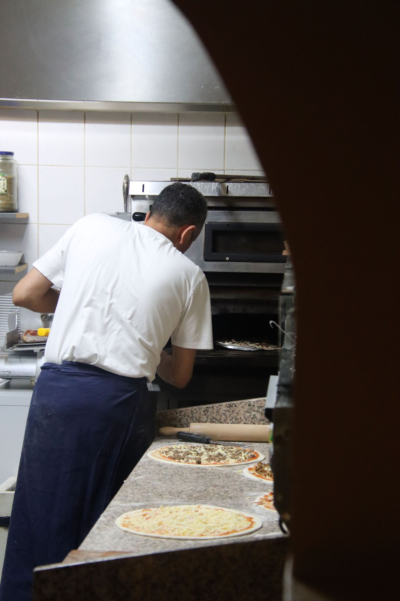
U kunt bij ons ook afhalen. Bestel online of bel ons. En op woensdag betaalt u voor elke afgehaalde pizza €11.
Online bestellen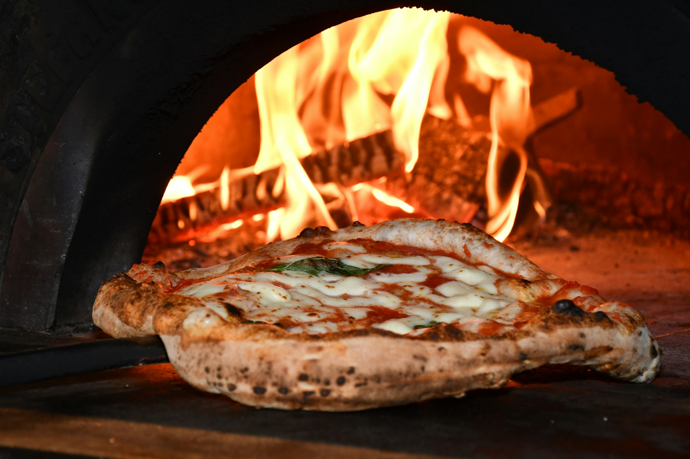
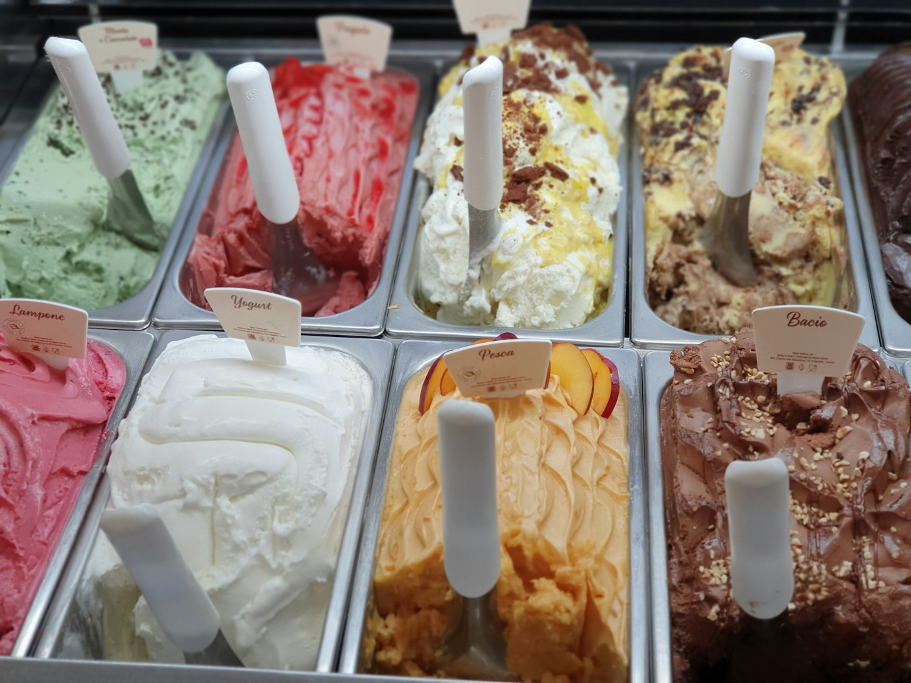
Ook voor Italiaans schepijs kunt u bij Don Nino terecht. Als toetje na de pizza, of gewoon even tussendoor op het Kerkplein.
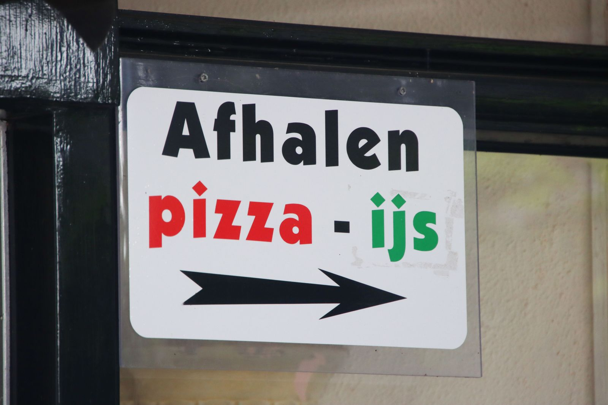
Ristorante Pizzeria Don Nino brengt de authentieke smaken van Italië naar het hart van Leersum.
De eigenaren zijn Yousef en Anwar. Samen brengen ze de Italiaanse keuken naar het sfeervolle centrum van het dorp, met een warme en gezellige omgeving waar u zich direct thuis voelt.
Naast de gerechten op de menukaart kunt u bij ons ook terecht voor Italiaans schepijs. Kom langs en proef de sfeer van Italië. We hopen u snel te mogen ontmoeten.
Buon appetito!
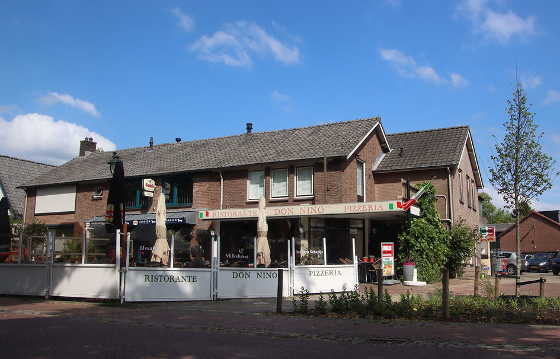
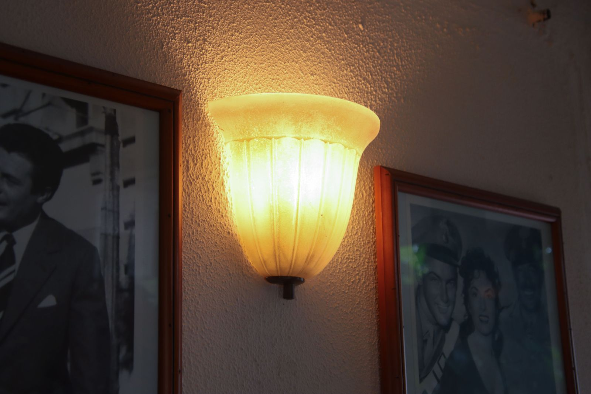
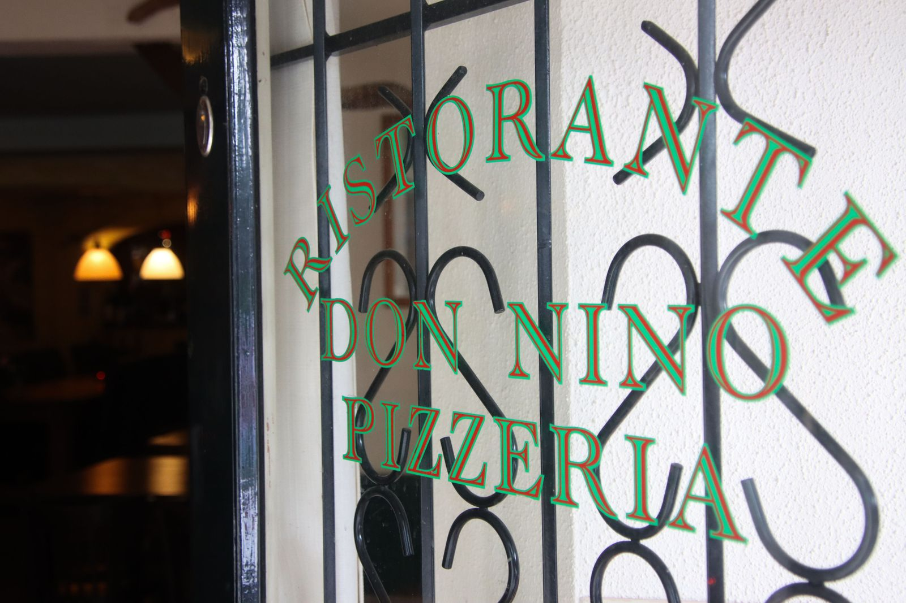
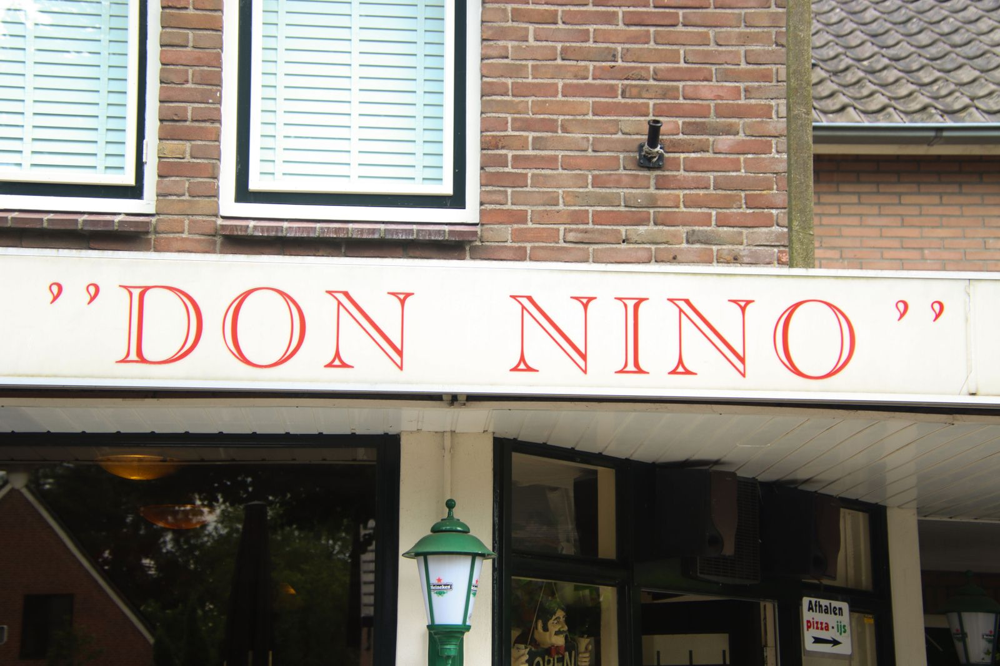
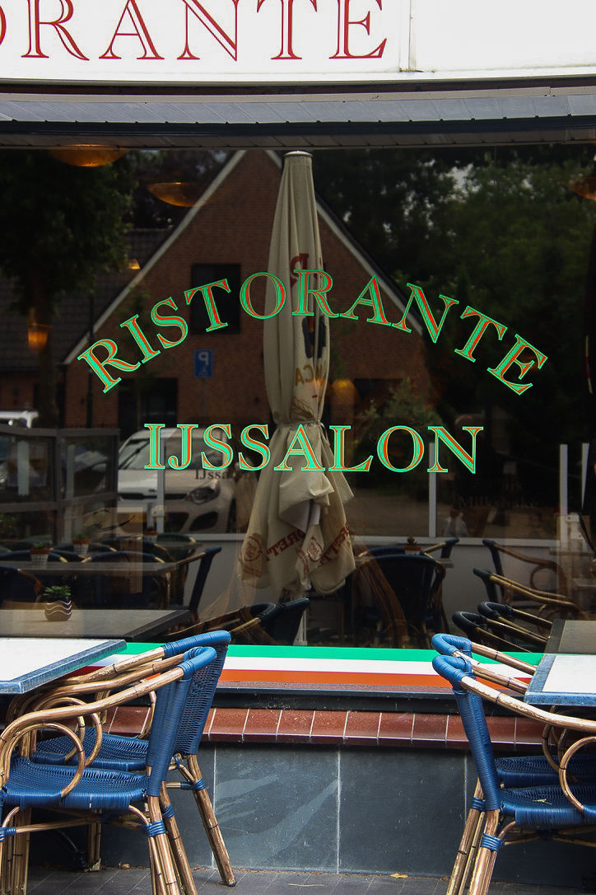
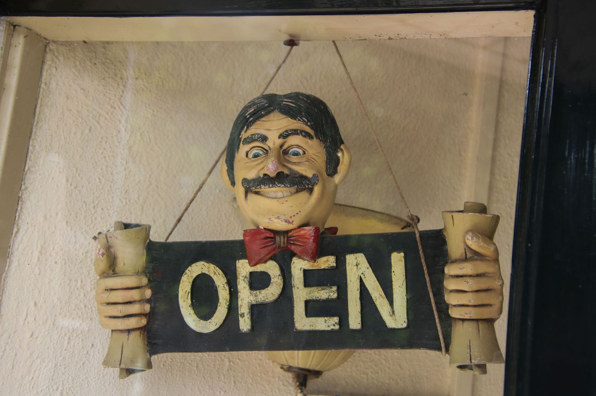
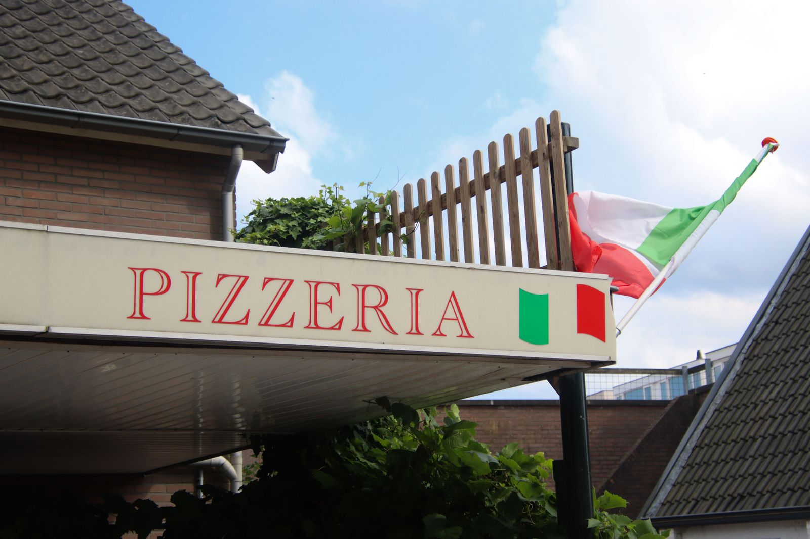
Een tafel reserveren of een bestelling plaatsen kan online, of bel ons.
Maandag t/m zondag12:00 tot 20:30
Maandaggesloten
Dinsdag t/m zondag16:00 tot 20:00
Op feestdagen zijn wij ook op maandag geopend.
Ristorante Pizzeria Don NinoWilt u iets kwijt naar aanleiding van uw bezoek aan onze ristorante? Vul het formulier in of mail naar donninoleersum58@gmail.com.